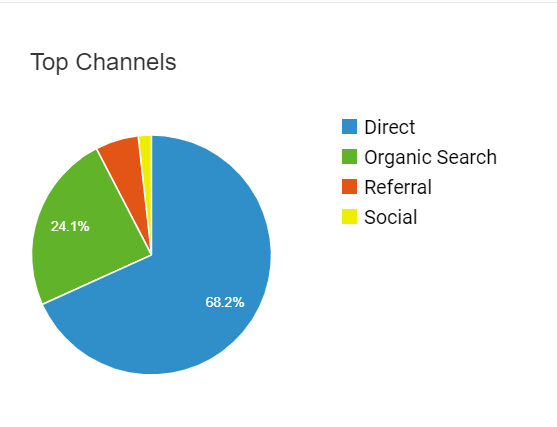
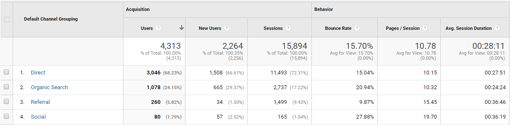

User Acquisition Analysis
The information shown below is recorded on April 24th on Google Analytics.
The below section is user acquisition. It shows where does COPA users come from, it has different types where including Direct, Organic Search, Referal, and Social. Direct users are COPA members or users who familiar and been through the COPA forum. Organic Search users are new users who click the COPA forum link from the search engine. Referal users are users who been directed from other third party websites. Lastly, Social users are users who are been directed from other platforms like Reddit, Youtube, and Facebook.
Below pie chart shows the percentage of user acquisition in each four sections. 68% of the user are COPA member, given that this is a highly specific forum website, it doesn't surprised that most of the users are the member of COPA itself. The only thing that should keep in mind is the organic search users. Organic search users should have a basic knowledge of General Aviation and COPA is not only targetting people who have Cirrus Aircraft but also people who want to know Cirrus or even buying a second hand used Cirrus Aircraft. There are many second hand used for sell websites including Trade-a-plane. Therefore, COPA is good to keep in mind that it could also provide services for people who interested in the Cirrus plane. If Trade-a-plane provides a more detail description for each aircraft for potential buyers, this would largely affect COPA member who wants to sell their used aircraft. At this point, I think COPA did a solid job of providing information for potential buyers. What really differentiate between COPA and used aircraft for sell website is COPA has a bunch of users who fly with Cirrus aircraft day and day. What COPA provides could be valuable information to potential buyers.
Below graph shows detailed information in user acquisition. The bounce rate on direct and organic users is normal and makes sense. The key takeaway from this graph is the referral user. It makes sense that users who been referred from this website are already reading some good stuff regarding to COPA. There is a higher chance that they are interested in the COPA website and want to dig in. The bounce rate of referral users indicates the assumption. In the near feature, if COPA plans to gain users, a good idea is sending out more referral links. People are generally giving more trust when they read information which is verified by the third party website.
